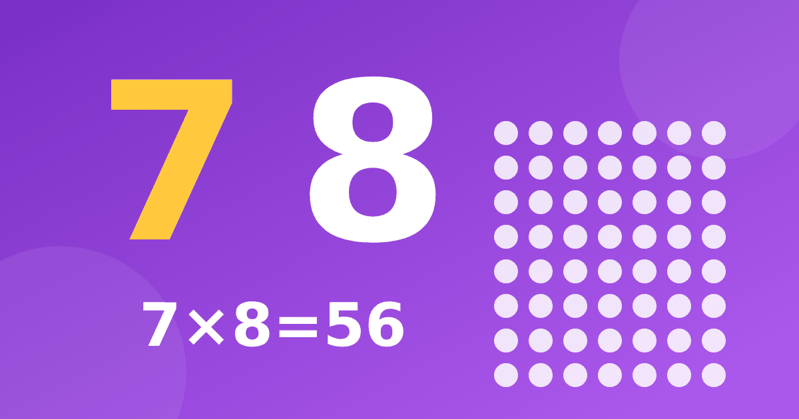

Таблица умножения на 7 и на 8: приёмы для самых трудных столбиков

Семёрку и восьмёрку дети чаще всего называют самыми трудными. Причина простая: к моменту, когда до них доходит очередь, лёгкие столбики уже позади, а оставшиеся примеры не такие «узорчатые», как у пятёрки или девятки. Но и здесь есть опоры. Разберём, как работает таблица умножения на 7 и таблица умножения на 8 и как к ним подойти без зубрёжки.
Сколько на самом деле нужно запомнить
Страшно звучит «весь столбик на 7 и на 8», но реальный объём гораздо меньше. Умножение на 1, 2, 5 и 10 ребёнок уже знает. Примеры с тройкой, четвёркой и девяткой тоже знакомы. Остаются только пять новых фактов в столбике семёрки и несколько в столбике восьмёрки.
- 7 × 6 = 42 (и перестановка 6 × 7).
- 7 × 7 = 49.
- 7 × 8 = 56 (и 8 × 7).
- 8 × 6 = 48 (и 6 × 8).
- 8 × 8 = 64.
Именно эти пять примеров дети забывают чаще всего, и именно их стоит выделить отдельно. Остальное получается из перестановки множителей. Если вы ещё не обсуждали это с ребёнком, начните с общего порядка изучения таблицы.
Приём первый: разложение на удобные числа
Семёрку удобно «ломать» на пять и два. Чтобы найти 7 × 6, нужно сложить 5 × 6 и 2 × 6, то есть 30 и 12, и получится 42. Ребёнок использует то, что знает твёрдо: пятёрку и двойку. Тот же приём работает для любого примера со знакомыми частями. Это не замена запоминанию, а страховка: если ответ вылетел из головы, его можно быстро получить.
Для восьмёрки удобнее другое разложение. Восемь — это десять без двух. Тогда 8 × 6 считается как 10 × 6 минус 2 × 6, то есть 60 минус 12, и получается 48. Помогает и второй вариант: 8 × 6 — это 5 × 6 плюс 3 × 6, то есть 30 и 18.
Приём второй: удвоение трижды
Восьмёрка — это двойка, удвоенная три раза. Чтобы умножить число на 8, удвойте его, удвойте результат и удвойте ещё раз. Для 8 × 6 получается 6, 12, 24, 48. Такая цепочка работает быстро, а главное, показывает ребёнку, что умножение связано с уже знакомым действием. Начинать лучше с небольших чисел и постепенно переходить к большим.
Приём третий: закономерности в ответах
В столбике восьмёрки есть красивая закономерность: единицы в ответах убывают через два, то есть 8, 6, 4, 2, 0, а потом повторяются. Ответы 8, 16, 24, 32, 40, 48, 56, 64, 72, 80 заканчиваются на 8, 6, 4, 2, 0, 8, 6, 4, 2, 0. Попросите ребёнка выписать ряд и найти узор самостоятельно. Само открытие запоминается лучше любого правила.
У семёрки закономерность другая. Единицы в ответах 7, 14, 21, 28, 35, 42, 49, 56, 63, 70 идут по убыванию на три, а при переходе через десяток снова растут. Это менее очевидно, поэтому для семёрки удобнее разложение и опорные примеры.
Как лучше учить: маленькие порции
Не пытайтесь запомнить весь столбик за один вечер. Возьмите один пример из «пятёрки трудных» и поработайте с ним несколько дней. Покажите картинку с рядами и столбцами, найдите ответ разными способами, потом задайте его в разной форме. Через несколько дней добавьте следующий пример. Такой темп не выглядит быстрым, но к концу недели результат оказывается заметно устойчивее.
Хорошо работает и «зеркальная» проверка. Если ребёнок помнит, что 7 × 8 равно 56, спросите, чему равно 8 × 7. Пусть сам объяснит, почему ответ тот же. Затем перейдите к делению: 56 разделить на 7. Об этом мы подробно писали в статье про деление как обратное умножение.
Игры и повторение
Трудные примеры лучше повторять в игровой форме. Карточки с вопросами, домино, лото и настольные игры подходят и для семёрки с восьмёркой. Хорошие идеи есть в статье про игры для таблицы умножения. Главное правило такое. Сначала ребёнок пробует вспомнить ответ сам, а если не получилось, использует приём и проверяет. Такая последовательность формирует и память, и уверенность.
На что обратить внимание
Не перегружайте ребёнка. Если примеры с семёркой и восьмёркой вызывают раздражение, вернитесь на шаг назад и повторите знакомые столбики. Не сравнивайте ребёнка с другими: у каждого свой темп, и трудные примеры у всех разные. Хвалите за найденный приём, а не только за быстрый ответ.
Если хочется получить помощь, в тренажёре есть отдельные короткие блоки с объяснениями для семёрки и восьмёрки: с картинкой, подсказками и заданиями разной сложности. Попробовать можно бесплатно.